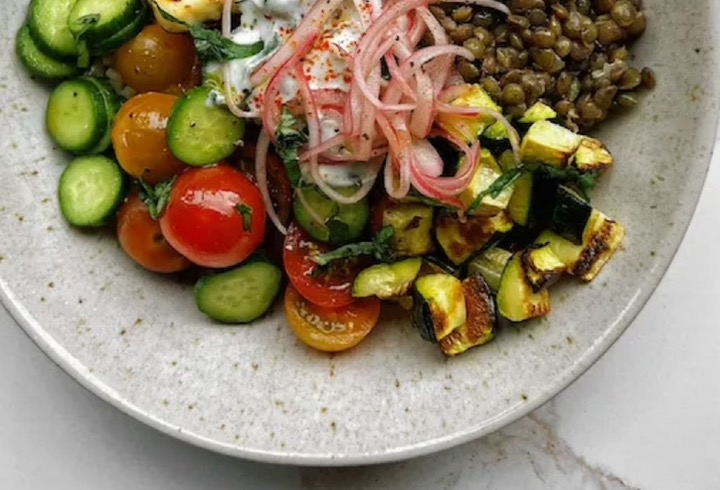

Summer Bowl with Hot Honey Halloumi

Description
It may look like a lot of ingredients, but this summertime favourite is just made up of little mini components that are all plated together, and each component is easy to make! Lentils provide the protein, and the abundance of veggies such as zucchini, tomatoes, cucumber, and red onion provide lots of additional nutrients. And of course, we can't forget a sauce — this one is a basil yogurt sauce that's nice and refreshing on a warm summer evening.
Ingredients
- Bowl
- 1 ½ cups cooked rice
- 1 cup cooked lentils
- 1 medium/large zucchini, diced about 1 ½ cups
- Olive oil
- Quick Pickled Onions
- ½ cup thinly sliced red onion
- 2 tbsp red wine vinegar
- Pinch of salt
- Pinch of sugar
- Cucumber Tomato Salad
- 2 small Persian cucumbers, thinly sliced about ¾ cup
- 1 cup halved cherry tomatoes
- Drizzle of olive oil
- Sprinkle of salt
- Basil Yogurt Sauce
- ½ cup Greek yogurt
- ¼ thinly sliced basil
- 2 cloves garlic, finely minced
- Juice of 1 lemon
- 1 tsp olive oil
- ¼ tsp salt
- Hot Honey Halloumi
- Olive oil
- 8.8 oz halloumi, cut into 1-inch slices
- Hot honey
Steps
- If your rice and lentils aren't cooked yet, start by preparing those according to package.
- Preheat oven to 425 F. Add your zucchini to a parchment paper-line baking sheet, toss in a little olive oil and salt, and bake for 20-30 minutes until zucchini is soft on the inside but just getting a little crisp on the outside. 3. Prepare your quick pickled onions by mixing everything together in a small bowl. Massage with your hands to break down the onion, and set aside to marinate, making sure the onions all get submerged by the liquid. 4. Prepare your cucumber tomato salad by mixing everything together inside a medium bowl.
- Prepare your dressing by whisking together ingredients in a small bowl until smooth. 6. Prepare your hot honey halloumi by heating up a drizzle of olive oil in a large skillet on medium heat. Add the halloumi, drizzle with hot honey, and fry for 3-4 minutes (until golden brown) on one side. Flip, drizzle with honey again, and cook for until 3-4 minutes or until crisp and golden brown.
- Add all your components to a bowl, starting with the rice as your base, and ending with the halloumi. Top with the basil yogurt sauce, and serve warm.